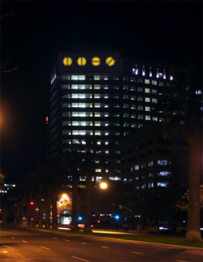

San Jose Semaphore, information theory, statistcs, communication, Ben Rubin Can artworks help to reveal a latent "intent to communicate" in architecture, urban landscapes, financial markets, and computer source code? Ben Rubin will discuss his latest public artwork, San Jose Semaphore, and place it in the context of his other recent projects, including Dark Source, The Quiet Ticking of Dreams, Checked Out, Open Outcry, and Listening Post.
Abstract "San Jose Semaphore," a public art commission for the city of San Jose, will be installed in spring 2006 on the roof of the Adobe Systems corporate headquarters tower in San Jose, where it will be visible from the freeway and throughout much of the city. The piece will be a functioning semaphore consisting of four ten-foot illuminated yellow-orange discs. The discs will each rotate to a new position every six seconds, allowing the semaphore to transmit messages using a visual coding system. The regular rhythm of the code transmission is broken at unpredictable intervals by the passage of large aircraft, which fly only a few hundred feet above the building as they approach the San Jose airport. The piece attempts to make visible its intent to communicate, so that a person seeing it for the first time might still understand it as a signal or a message, even if its meaning is not known. My talk will focus on the "San Jose Semaphore" project in detail; I will present the concept research that led to it, as well as an overview of its 3-year production process and the technology that drives it. I will also discuss the values that I bring to the creation of a public, urban artwork like this. To provide context, I will also present a survey of my recent projects. These include "Dark Source" (2005), a critical artwork made from the source code of the Diebold AccuVote-TS electronic voting terminal; "Checked Out" (2006), a public artwork that displays the titles of books recently checked out from the Minneapolis Public Library system; "Open Outcry" (2002), an audio portrait of the New York's energy futures markets, and "Listening Post" (2002), a collaboration with statistician Mark Hansen that transform internet chat into an audiovisual installation. URLS:
http://earstudio.com/projects/projects.html |